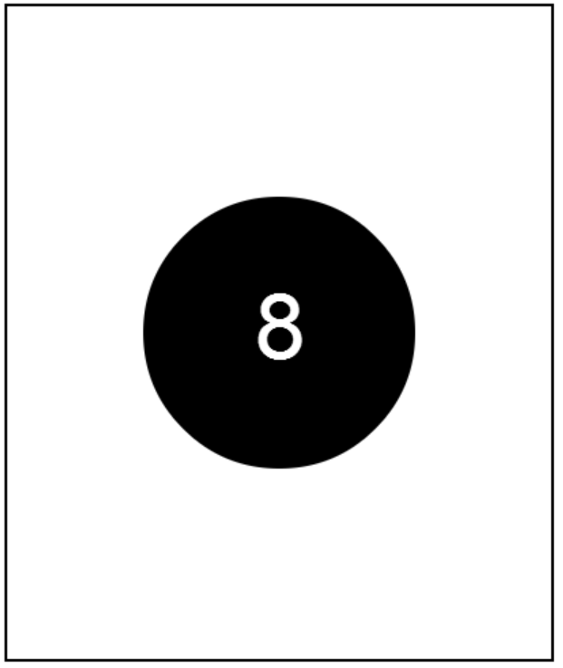

This is an example that we did in the video.
You are encouraged to play around with it, to see how it all works.
When you are done, click the arrow to go to the next problem.
這是我們在視頻中做了一個榜樣。我們鼓勵你玩它，看看它是如何工作的。當你完成後，單擊箭頭進入下一個問題。

// This program will draw an 8 ball
// centered on the screen. The circle
// should be black with radius 100, and
// the "8" should be white in 50pt Arial
// font.
function start(){
var ball = new Circle(100);
var centerX = getWidth() / 2;
var centerY = getHeight() / 2;
ball.setPosition(centerX, centerY);
add(ball);
var number = new Text("8");
number.setFont("50pt Arial");
number.setColor(Color.white);
number.setPosition(centerX - number.getWidth()/2, centerY + number.getWidth()/2);
add(number);
}
//這項計劃將利用一個8球
//在屏幕上居中。圓
//應該是黑色的，半徑100，和
//的“8”應該是白色的50點宋體
//字體。
函數的開始（）{
可變球=新圓（100）;
可變中心X =得到寬度（）/2;
變芯Y=獲取高度（）/2;
球。設置位置（中X，中心Y）;
添加（球）;
變種數=新的文本（“8”）;
數。設置字體（“50pt宋體”）;
數。設置顏色（顏色。白色）;
數。設置位置（中心X - 號。獲得寬度（）/2，中心Y +號。得到寬（）/ 2）;
添加（數）;
}